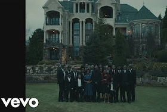

21 Savage - a lot ft. J. Cole

On the introspective opener to his sophomore studio album, 21 Savage raps about having “a lot” of blessings and curses in his life. He reflects on his tumlituous upbringing, dangerous lifestyle, and the pain and loss he has suffered.
Yo Gotti-Put a Date On It ft. Lil Baby

On the heels of releasing their dynamic "Put a Date on It" collaboration, Yo Gotti and Lil Baby returned Monday (Jan. 28) with a gritty video for the June James-produced single.
Ariana Grande-break up with your girlfriend, i'm bored

In “break up with your girlfriend, i’m bored,” thank u, next’s final track and third official single, Ariana meets a boy at a party and being attracted to him, only to realize that he has a girlfriend. She tells him to break up with his girlfriend so Ariana can have him for herself.
Billie Eilish - bury a friend

“bury a friend” is written from the perspective of Billie Eilish’s monster under her bed. The track details a confusing relationship with this ‘entity’ and ambiguously sets her up to be the monster itself.The song itself features a Prismizer effect, which manipliates pitch and frequency characteristics to achieve a different, choral effect.
Anuel AA, Karol G - Secreto

"Secret" is a confession of love between Karol G & Anuel AA where they admit that they have been having a secret relationship. This is their second song together after "Guilty" a few months ago
Daddy Yankee & Snow - Con Calma

Ramón Luis Ayala Rodríguez, better known as Daddy Yankee, is a Puerto Rican reggeaton artist, actor film producer and businessman. He is partly responsible for the great breakthrough of reggaeton. He is very popular in Latin America.